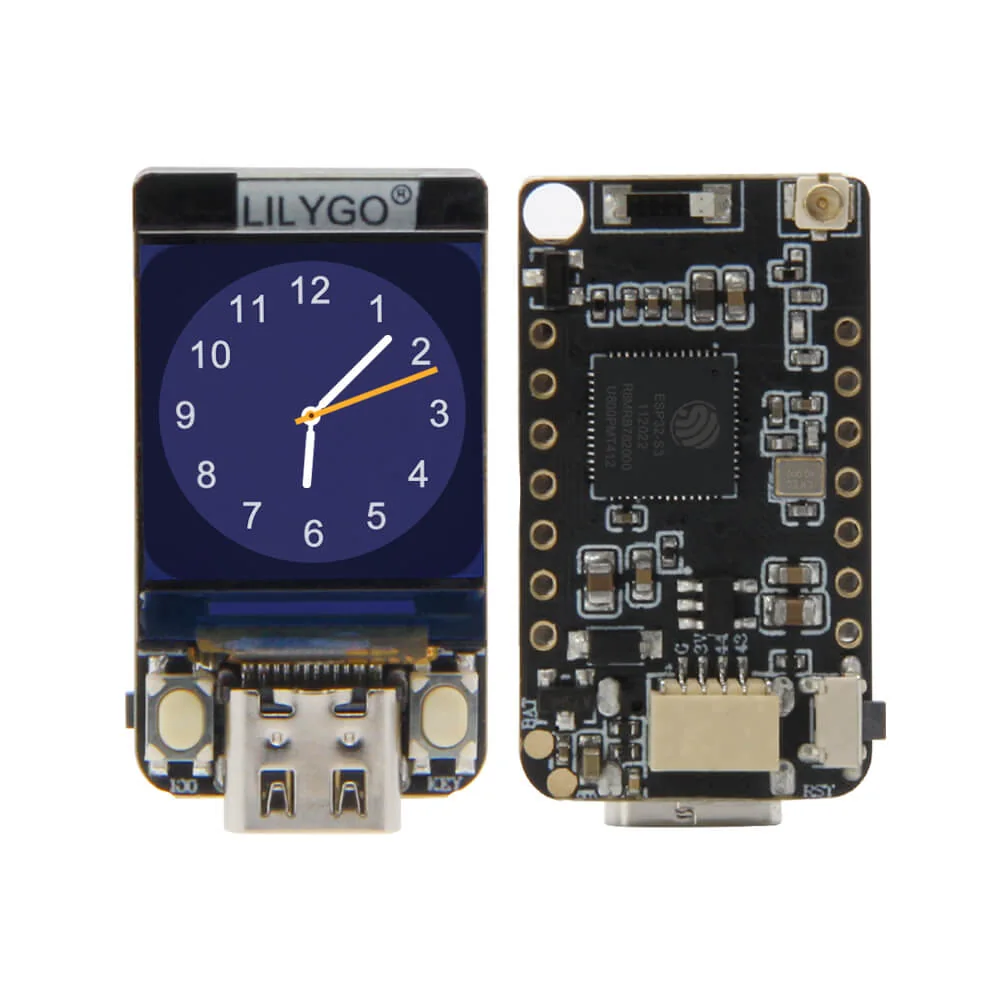

T-QT Pro
LilyGO · LilyGO T-QT Pro – ESP32-S3 0.85" 128×128 round-corner IPS mini board
T-QT Pro is a 0.85" 128x128 LCD ESP32 display board by LilyGO based on the ESP32-S3 with 4MB (FN4R2) / 8MB (FN8) flash, 2MB (FN4R2 only) PSRAM.
Features, ports & interfaces
- SPI display
- 2 MB PSRAM
- 4 MB flash
- Wi-Fi 4 (802.11 b/g/n, 2.4 GHz) – version from the ESP32-S3 datasheet
- Bluetooth 5 (LE) – version from the ESP32-S3 datasheet
- Battery charge / discharge
- Buttons: IO0 + IO47
Specifications
| Parameter | Value | Source |
|---|---|---|
| Screen size | 0.85" | source |
| Resolution | 128x128 | source |
| Panel | LCD | source |
| Shape | Round | |
| Display interface | SPI | source |
| Display driver | GC9A01 | source |
| MCU / SoC | ESP32-S3FN4R2 / ESP32-S3FN8 (versions) | source |
| MCU family | ESP32-S3 | source |
| CPU frequency | 240 MHz | source |
| Flash | 4MB (FN4R2) / 8MB (FN8) | source |
| PSRAM | 2MB (FN4R2 only) | source |
| Wi-Fi | Wi-Fi 802.11 b/g/n | source |
| Bluetooth | BT V5.0 + BLE | source |
| Category | LilyGO (T-series) | |
| Brightness | 260 cd/m² | source |
| Buttons | IO0 + IO47 | source |
| Battery charger | Battery charge / discharge | source |
| Vendor | LilyGO |